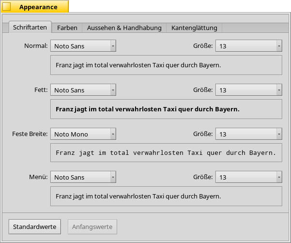
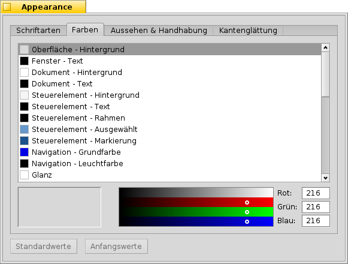
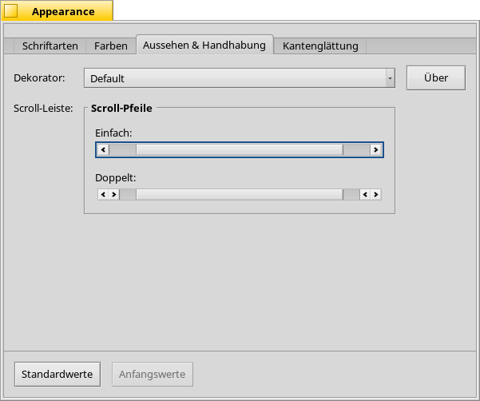
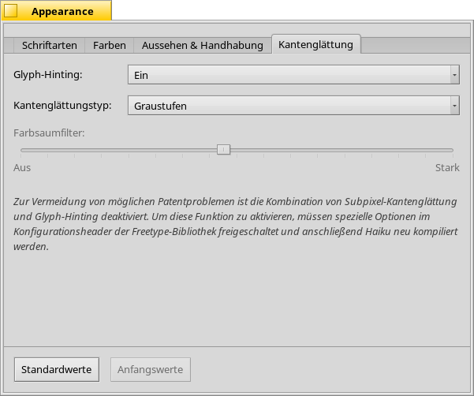
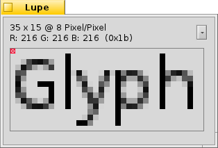
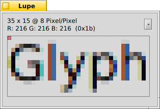

Deutsch
Deutsch Català
Català English
English Español
Español Français
Français Italiano
Italiano Magyar
Magyar Polski
Polski Português
Português Português (Brazil)
Português (Brazil) Română
Română Slovenčina
Slovenčina Suomi
Suomi Svenska
Svenska 中文 ［中文］
中文 ［中文］ Русский
Русский Українська
Українська 日本語
日本語 Erscheinungsbild
Erscheinungsbild
| Deskbar: | ||
| Ort: | /boot/system/preferences/Appearance | |
| Einstellungen: | ~/config/settings/system/app_server/appearance ~/config/settings/system/app_server/fonts |
Im Erscheinungsbild Panel lassen sich einige Details von Haikus Erscheinungsbild anpassen.
 Schriftarten
Schriftarten

Haiku verwendet systemweit drei verschiedene Schriftarten. Sie können hier unter "Normal", "Fett" und "Feste Breite" (Schrift mit fester Buchstabenbreite) festgelegt werden. Daneben kann auch noch die Schriftart für Menüs eingestellt werden.
Installation neuer Schriftarten
Neue Schriften, die nicht als ordentliches .hpkg Paket vorliegen, können installiert werden, indem sie in einen ihrem Schrifttyp benannten Unterordner (psfonts oder ttfonts) in den entsprechenden non-packaged Ordner kopiert werden (siehe Dateisystem Layout). Bei TrueType Schriften wären das:
| /boot/system/non-packaged/data/fonts/ttfonts/ | Schriften, die für jeden Benutzer verfügbar sind | |
| /boot/home/config/non-packaged/data/fonts/ttfonts/ | Schriften, die nur für einen selbst verfügbar sind |
Farben

Im Reiter, lassen sich die Farben einiger Teile der Oberfläche einstellen. In das Farbfeld können Farben per Drag & Drop aus anderen Programmen, wie zum Beispiel WonderBrush, Icon-O-Matic oder dem Hintergründe Panel, gezogen werden.
Dekorator

Dekoratoren bestimmen Aussehen und Verhalten von Fenstern und all ihrer grafischen Elemente. Zur Zeit gibt es für Haiku allerdings nur einen einzigen Standard-Dekorator. Sollte man irgendwo einen alternativen Dekorator gefunden und installiert haben, ließe er sich hier auswählen.
Bei Haikus Standard-Dekorator lässt sich die Art der Scroll-Pfeile einstellen: entweder einfache Pfeile am Ende von Scroll-Balken, um ein bisschen Platz zu sparen, oder doppelte Pfeile — der BeOS Tradition folgend — wodurch sich beim Rauf- und Runter- oder Links- und Rechts-Scrollen eventuell ein paar Mausbewegungen sparen lassen...
Kantenglättung

Im Reiter, befinden sich unterschiedliche Einstellungen, die die Ausgabe auf dem Bildschirm beeinflussen.
Glyph-Hinting
Aktiviert man , werden alle Buchstaben so ausgerichtet, dass ihre horizontalen und vertikalen Ränder genau zwischen zwei Pixel liegen. Dadurch erreicht man einen sehr guten Kontrast, besonders bei Darstellungen von schwarz auf weiß. Text erscheint schärfer. Die Einstellung beschränkt das Hinting auf Schriften fixer Breite und ist gerade bei Geräten mit geringen Auflösungen, wie Netbooks, interessant. Bei kleinen Schriftarten kann das Hinting ziemlich schlimm aussehen. Mit dieser Einstellung hat man die Vorteile aber zumindest noch in Texteditoren und im Terminal.
Hier sieht man den Unterschied von Hinting anhand vergrößerter Screenshots:
 Hinting: aus |  Hinting: an |
Es sei angemerkt, dass alle Lupe Fenster auf dieser Seite natürlich auch selbst mit den verschiedenen Optionen dargestellt werden. So bekommt man einen echten Eindruck der Einstellungen, indem man zum Beispiel die fetten Titel der Fensterreiter vergleicht, oder den Text "33 x 15 @ 8 pixels/pixel".
Kantenglättungstyp
Eine weitere Technik, um die Darstellung zu verbessern, ist die Kantenglättung, welche auf Vektorgrafiken, als auch auf Text angewandt wird. Sie glättet Linien, indem die Farbe bestimmter Pixel geändert wird. Dazu gibt es zwei unterschiedliche Methoden:
ändert die Intensität der äußeren Pixel.
macht das noch besser, vor allem bei (hochauflösenden) LCD-Monitoren. Anstatt der Intensität eines Pixels, wird die Farbe so geändert, dass eine Kante nur einen Bruchteil eines Pixels bewegt wird, da LCD-Schirme jeden Pixel aus einer roten, grünen und blauen Komponente zusammensetzen.
Hier wieder die beiden Methoden anhand vergrößerter Screenshots:
Grayscale, Hinting: aus |  LCD subpixel, Hinting: aus |
Subpixel-Kantenglättung verleiht Objekten einen leicht farbigen Umriss, den nicht jeder mag. In Haiku kann man beide Kantenglättungsmethoden mischen und die für einen richtige Einstellung mit einem Schieberegler finden.
Wenn Glyph-Hinting zusammen mit LCD-Subpixel-Kantenglättung aktiviert wird, indem man den Quellcode entsprechend ändert und neu kompiliert, sieht das im Vergleich mit Hinting bei Graustufen-Kantenglättung so aus:
Graustufen, Hinting: an | LCD-Subpixel, Hinting: an |
Ganz unten im Fenster befinden sich zwei Buttons:
| Setzt alle Einstellungen auf die Standardwerte zurück. | ||
| setzt wieder die Werte, die aktiv waren, als das Erscheinungsbild Panel gestartet wurde. |